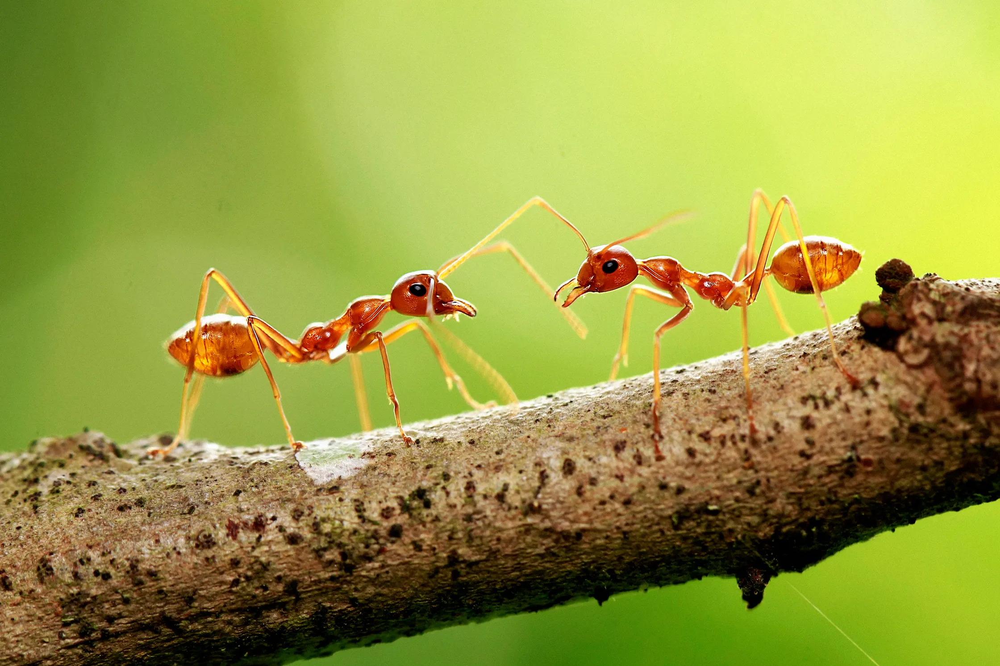

Home
Home Ants
Ants Bees
Bees Beetles
Beetles Butterflies
Butterflies Cockroaches
Cockroaches Flies
Flies Mosquitoes
Mosquitoes Spiders
Spiders Newsletter
NewsletterAnts
Description
Ants are most closely related to bees and wasps, which all have a narrow waist that segments their body. Their body is separated into three parts: the head, thorax, and gaster. The gaster is the part of the abdomen behind the waist.
There are more than 12,000 species of ant and most of which are black, brown, or red in color.
Range
Ants are found almost everywhere on the planet. The only areas that do not sustain ant populartions are in Anarctica, Greenland, Iceland, and some island nations. Most species live in soil, leaf litter, or decaying plants.
Diet
Ant diets vary among species, but most eat leaves, seeds, small insects, nectar, and honeydew. They carry food back to their nest and are capable of carrying more than 10 times their body weight.
Behavior
Ants have keen senses and use them to communicate with colony members. They produce chemicals called pheromones, which are sensed by other ants using their antennae. They also use their antennae (or other body parts) to send messages through touch. Touch messages are transmitted through stridulations, which are sounds and vibrations generated by one ant rubbing its body parts together. These forms of communication relay different messages, such as where food is located or what dangers are present.

Conservation
Ant populations are stable, although they often come into conflict with humans because they colonize homes and some (like fire ants) have stingers that can harm people. They are extremely important members of the ecosystems they are found in and help to aerate soil.
Fun Fact
Ants usually form colonies with one nest and one queen. However, some species have formed huge groups called supercolonies, which can have multiple nests and multiple queens. A supercolony may contain billions of ants that together span thousands of miles.
Source: National Wildlife Federation